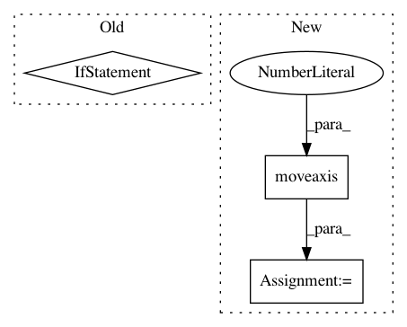

8db6d859eab1d4ccddafa48f2abc602c4eac0e42,snntoolbox/datasets/aedat/DVSIterator.py,,get_frames_from_sequence,#Any#Any#Any#Any#Any#Any#Any#Any#Any#Any#Any#,428
Before Change
frames = scale_event_frames(frames)
channel_axis = 1 if data_format == "channels_first" else -1
return np.expand_dims(frames, channel_axis)
After Change
frames = scale_event_frames(frames)
if data_format == "channels_first":
frames = np.moveaxis(frames, -1, 1)
return frames
def add_event_to_frame(frame, x, y, p, frame_gen_method="rectified_sum",
In pattern: SUPERPATTERN
Frequency: 3
Non-data size: 3
Instances
Project Name: NeuromorphicProcessorProject/snn_toolbox
Commit Name: 8db6d859eab1d4ccddafa48f2abc602c4eac0e42
Time: 2020-07-02
Author: bodo.rueckauer@gmail.com
File Name: snntoolbox/datasets/aedat/DVSIterator.py
Class Name:
Method Name: get_frames_from_sequence
Project Name: rodluger/starry
Commit Name: c47cbed3d69e36b5f3aa3e76e1cac73224e7ddac
Time: 2019-04-08
Author: rodluger@gmail.com
File Name: starry/map/pybase.py
Class Name: PythonMapBase
Method Name: render
Project Name: analysiscenter/batchflow
Commit Name: 7b73126c102ca24e60f1284841218112109e3fec
Time: 2019-08-26
Author: nikita_007_94@mail.ru
File Name: batchflow/batch_image.py
Class Name: ImagesBatch
Method Name: _to_array_